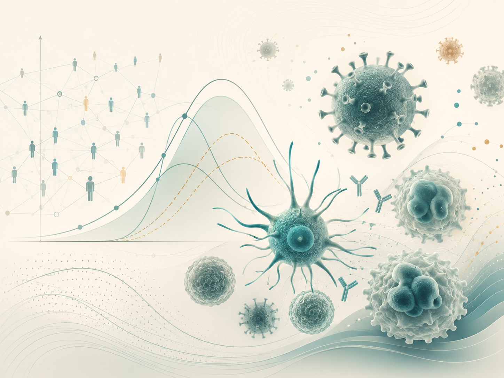

Mathematical Modeling in Immunology and Infectious Disease Epidemiology
This theme combines within-host infection and immune-response models with population-level epidemic models. I study how latency, vaccination, asymptomatic carriage, distributed delays, and other biologically meaningful mechanisms alter threshold conditions, persistence, global stability, and intervention outcomes.

- Global dynamics of a within-host model for immune response with a generic distributed delay — Al-Darabsah, I. Mathematical Methods in the Applied Sciences, 48(12), 12186–12206. DOI
- A simple in-host model for COVID-19 with treatments: model prediction and calibration — Al-Darabsah, I., Liao, K. L., & Portet, S. Journal of Mathematical Biology, 86(2), 20. DOI
- A time-delayed SVEIR model for imperfect vaccine with a generalized nonmonotone incidence and application to measles — Al-Darabsah, I. Applied Mathematical Modelling, 91, 74–92. DOI
- Threshold dynamics of a time-delayed epidemic model for continuous imperfect-vaccine with a generalized nonmonotone incidence rate — Al-Darabsah, I. Nonlinear Dynamics, 101(2), 1281–1300. DOI
- A periodic disease transmission model with asymptomatic carriage and latency periods — Al-Darabsah, I. & Yuan, Y. Journal of Mathematical Biology, 77(2), 343–376. DOI
- A time-delayed epidemic model for Ebola disease transmission — Al-Darabsah, I. & Yuan, Y. Applied Mathematics and Computation, 290, 307–325. DOI